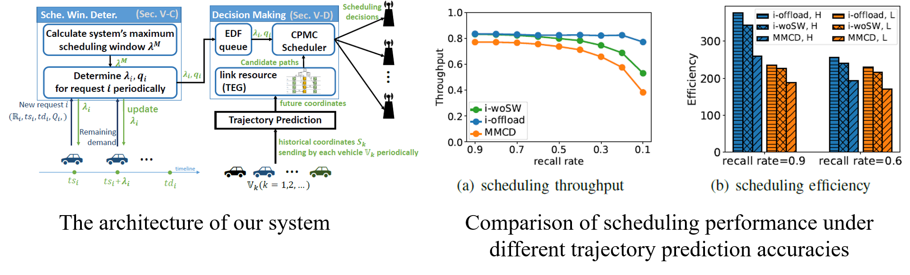
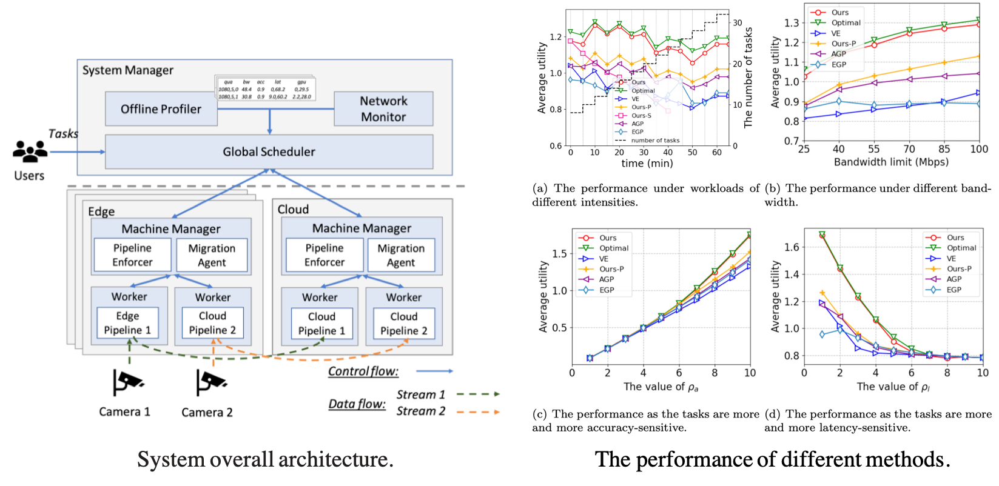
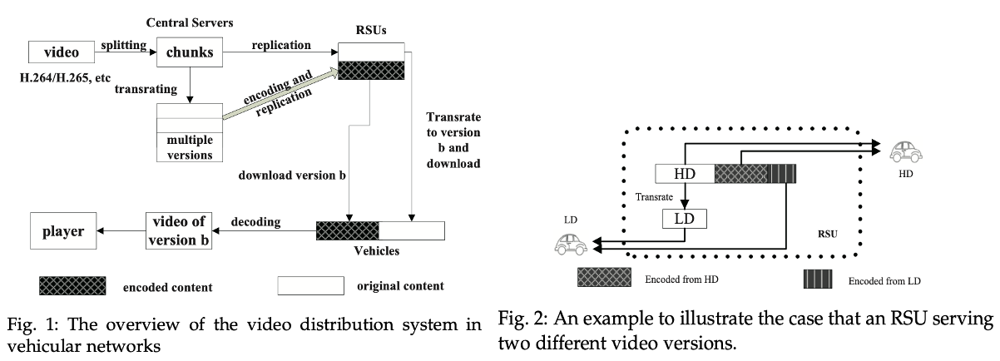
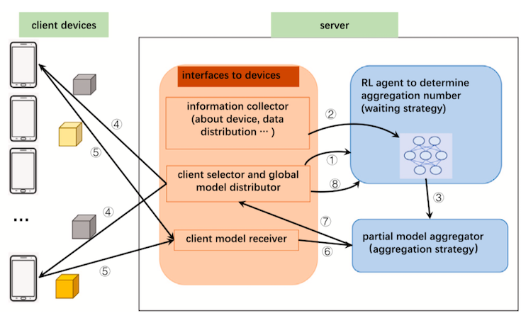
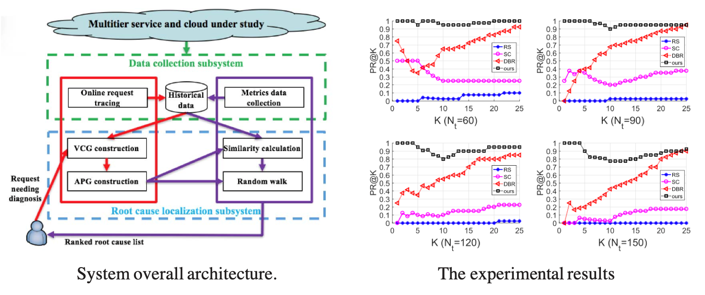

This page is in progress.
Resource Scheduling in Distributed Systems
In a distributed system, logical or physical resources (e.g. computation resources, storage resources) on different servers are connected by networks to provide services for users. These resources can be used by a single user/job or be shared by many users/jobs. A key problem that has to be solved by the operator of a distributed system is how to schedule these resources to achieve its particular operation goal, e.g., efficiency, performance, fairness, responsiveness, security. I am broadly interested in the resource scheduling problem in various distributed systems, such as edge/cloud computing systems, distributed learning systems, streaming computing systems, and opportunistic networks (vehicle networks). Basically, I am driven by these challenges in the resource scheduling problem.
1) For a single job with many components, how to place its components and allocate resources to optimize its performance or guarantee its desired performance? The performance might be measured in terms of various metrics, e.g., latency, throughput.
2) If the resources are shared by a lot of jobs, how to allocate resources to these jobs? Theoretically, it can be formulated as an optimization problem and what we shall do is solving the optimization problem. In practice, we may not be able to have perfect and complete information about the environment.
3) Sometimes the system needs to migrate components or tasks from their current locations to other locations. How to accomplish the migration without perceptible interruptions? We may need specialized solutions for different jobs as general-purpose solutions are usually less efficient.
4) Developing proper pricing mechanisms is an effective way to schedule resources for market efficiency. How to develop pricing mechanisms for different markets? What if some users in the market are malicious?
This page is in progress.
Details of Some Publications
| [TON, under revision] | 
Chao Xu, Jessie Hui Wang, Yipeng Zhou, Yuedong Xu, Changqing An, Jilong Wang, "Offloading Elastic Transfers to Opportunistic Vehicular Networks Based on Imperfect Trajectory Prediction," IEEE/ACM Transactions on Networking. (under revision.) Due to the high cost of cellular networks, vehicle users would like to offload elastic traffic through vehicular networks as much as possible. This demand prompts researchers to consider how to make the vehicular network system achieve better performance for requests coming online, such as maximizing throughput. The traffic in vehicular networks is transferred through opportunistic contacts between vehicles and infrastructures. When making scheduling decisions, the scheduler must be aware of vehicles' future trajectories. Vehicles' future trajectories are usually predicted by trajectory prediction algorithms when users are not willing to report their future trips. Unfortunately, no trajectory prediction algorithm can be completely accurate, and these inaccurate prediction results will reduce the throughput. In this paper, we focus on overcoming this challenge. Specifically, we first measure the LSTM (Long Short Term Memory) prediction method that has been widely used recently and understand the accuracy of predicted contacts. Then, based on the enlightenment from the measurement, we design a system, i.e., i-Offload, to offload elastic traffic under an imperfect trajectory prediction algorithm. The experimental results show that our method still has good throughput and scheduling efficiency under an imperfect prediction algorithm. Compared with an existing scheduling method, our method outperforms it by 42% and 45% in terms of scheduling throughput and scheduling efficiency, respectively. |
| [TON 2021] | 
Chenghao Rong, Jessie Hui Wang, Juncai Liu, Jilong Wang, Fenghua Li, and Xiaolei Huang, "Scheduling Massive Camera Streams to Optimize Large-scale Live Video Analytics," IEEE/ACM Transactions on Networking. (minor revision.) paper In smart cities, a city deploys an infrastructure and departments submit requests to access and analyze videos for their own purposes. The live analytics of massive streams is computation-intensive and the tasks might be latency-critical, which makes scheduling massive streams to optimize all tasks an essential and challenging work. We exploit an end-edge-cloud architecture and propose an adaptive system to schedule the massive camera streams and tasks, which considers all factors affecting the computation and networking resource consumption, e.g., sharing of model computation, video quality, model partition, and task placement. Particularly, the resource consumption of Faster R-CNN + ResNet101 under each partition scheme is profiled for the first time and we notice the partition must be used together with lossless compression techniques to be beneficial. Furthermore, sometimes tasks might be required to migrate because the scheduling decision made by the system changes to adapt to the changing resource supply and demand. In order to avoid the performance degradation during migration, we propose a nondestructive migration scheme and implement it in the system. Simulations demonstrate our system achieves a total utility close to the maximum and our analytics system performs better than state-of-the-art solutions. The scheduler and the nondestructive migration scheme are welcomed by a well-known edge computing platform KubeEdge and we are working with them to contribute it to the community after the paper is accepted. |
| [TMC 2021] | 
[TMC 2021] Yipeng Zhou, Jiawen Chen, Guoqiao Ye, Di Wu, Jessie Hui Wang, and Min Chen, "Collaboratively Replicating Encoded Content on RSUs to Enhance Video Services for Vehicles," IEEE Transactions on Mobile Computing, vol. 20, no. 3, pp. 877-892, March 2021. [paper] With the development of smart cities, Internet services will be pervasively accessible for moving vehicles. It is envisioned that the video content demand of vehicles will explode in the near future. However, the strategy to efficiently distribute video content in large-scale vehicular networks is still absent due to challenges arising from the huge video population, heavy bandwidth consumption, heterogeneous user devices and vehicles’ mobility. In this work, we propose to collaboratively replicate video content on Roadside Units (RSUs) to enhance video distribution services based on the fact that the contact period between moving vehicles and a single RSU is not long enough to complete video downloading. In our design, a video file is split into multiple chunks. Each RSU replicates a small number of original chunks and chunks encoded by network coding. Replicating encoded chunks can reduce redundancy of chunks on different RSUs so that RSUs can complement each other better, whereas original chunks can be transrated to chunks with lower bitrates flexibly to fit in users’ devices. Therefore, we replicate both original and encoded chunks on RSUs to take advantages of both sides. Stochastic models are employed to analyze chunk download processes and a convex optimization problem is formulated to determine the optimal partition of space allocated to each kind of chunks. Furthermore, we extend our strategy to support video streaming services and empirically prove that the influence caused by limitations of network coding is moderate. In the end, we conduct extensive simulations which not only validate the accuracy of our models but also demonstrate that our strategy can effectively boost video distribution services. |
| [CN 2021] | 
Juncai Liu, Jessie Hui Wang, Chenghao Rong, Yuedong Xu, Tao Yu, and Jilong Wang, "FedPA: an Adaptively Partial Model Aggregation Strategy in Federated Learning," Computer Networks. Paper [@ScienceDirect] Federated Learning has sparked increasing interest as a promising approach to utilize large amounts of data stored on network edge devices. In Federated Averaging, the server keeps waiting for client models to compute the global model in each round unless all client models are received or a pre-configured timer expires, therefore it suffers seriously from participant devices with weak computation and/or communication capability, which is a kind of straggler problem. In this paper we design FedPA, a framework based on partial model aggregation strategy, in which the server waits for only an appropriate number of device models (referred to as aggregation number) in each round. Our experiment shows that the accuracy loss of the aggregated global model in a single round is not significant if the aggregation number is decided carefully. We propose a waiting strategy to determine the aggregation number for each round dynamically and the aggregation number is adaptive to achieve a tradeoff between single-round training time and the expected number of rounds to reach the target accuracy. Stale models are also included during aggregation when they arrive, and their positive value and negative effect are carefully evaluated and reflected in the aggregation strategy. Experiments show that FedPA outperforms the baseline strategy FedAvg and other three algorithms named FedAsync, FLANP and AD-SG. It can work well in all scenarios with different distributions of data samples (characterized by non-IID ratio) and computation/communication capability (characterized by level of heterogeneity) among devices. Experiments also show that FedPA is robust when a certain amount of noise is added into the input from clients for privacy concerns. |
| [TON 2019] | |
| [TON 2019] | Yuedong Xu, Zhujun Xiao, Tianyu Ni, Jessie Hui Wang, Xin Wang and Eitan Altman, "On The Robustness of Price-Anticipating Kelly Mechanism," IEEE/ACM Transactions on Networking, vol. 27, no. 4, pp. 1558-1571, Aug. 2019. [paper] [@IEEE] The price-anticipating Kelly mechanism (PAKM) is one of the most extensively used strategies to allocate divisible resources for strategic users in communication networks and computing systems. The users are deemed as selfish and also benign, each of which maximizes his individual utility of the allocated resources minus his payment to the network operator. However, in many applications a user can use his payment to reduce the utilities of his opponents, thus playing a misbehaving role. It remains mysterious to what extent the misbehaving user can damage or influence the performance of benign users and the network operator. In this work, we formulate a non-cooperative game consisting of a finite amount of benign users and one misbehaving user. The network operator allocates resources to all the users via the price-anticipating Kelly mechanism. We present six important performance metrics with regard to the total utility and the total net utility of benign users, and the revenue of network operator under three different scenarios: with and without the misbehaving user, and the maximum. We quantify the robustness of PAKM against the misbehaving actions by deriving the upper and lower bounds of these metrics. With new approaches, all the theoretical bounds are applicable to an arbitrary population of benign users. Our study reveals two important insights: i) the performance bounds are very sensitive to the misbehaving user’s willingness to pay at certain ranges; ii) the network operator acquires more revenues in the presence of the misbehaving user which might disincentivize his countermeasures against the misbehaving actions. |
| [TON 2018] | 
Jianping Weng, Jessie Hui Wang, Jiahai Yang, and Yang Yang, "Root Cause Analysis of Anomalies of Multitier Services in Public Clouds," IEEE/ACM Transactions on Networking, vol. 26, no. 4, pp. 1646-1659, 2018. paper Anomalies of multitier services of one tenant running in cloud platform can be caused by the tenant’s own components or performance interference from other tenants. If the performance of a multitier service degrades, we need to find out the root causes precisely to recover the service as soon as possible. In this paper, we argue that the cloud providers are in a better position than the tenants to solve this problem, and the solution should be non-intrusive to tenants’ services or applications. Based on these two considerations, we propose a solution for cloud providers to help tenants to localize root causes of any anomaly. With the help of our solution, cloud operators can find out root causes of any anomaly no matter the root causes are in the same tenant as the anomaly or from other tenants. Particularly, we elaborate a non-intrusive method to capture the dependency relationships of components, which improves the feasibility. During localization, we exploit measurement data of both application layer and underlay infrastructure, and our two-step localization algorithm also includes a random walk procedure to model anomaly propagation probability. These techniques improve the accuracy of our root causes localization. Our small-scale realworld experiments and large-scale simulation experiments show a 15%–71% improvement in mean average precision compared with the current methods in different scenarios. |